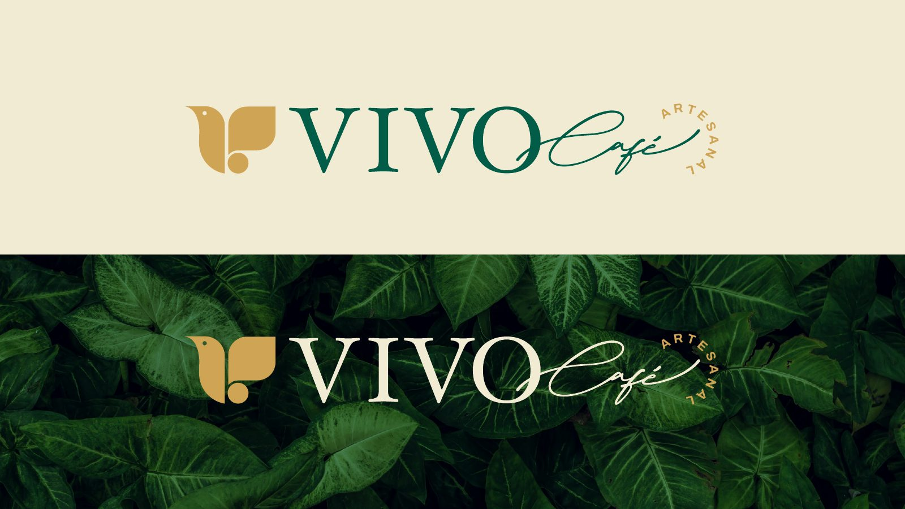
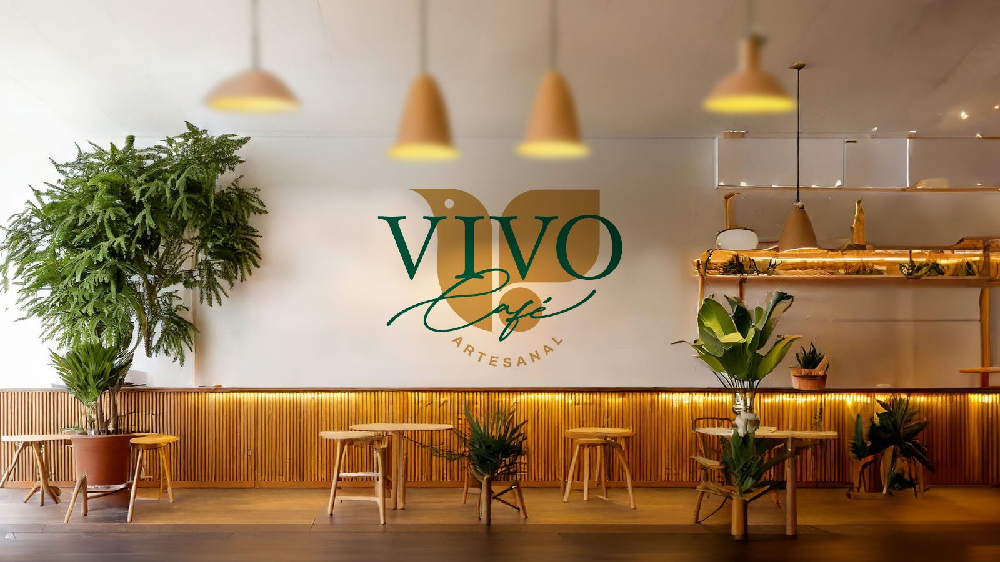
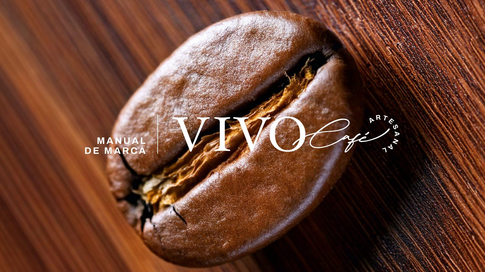
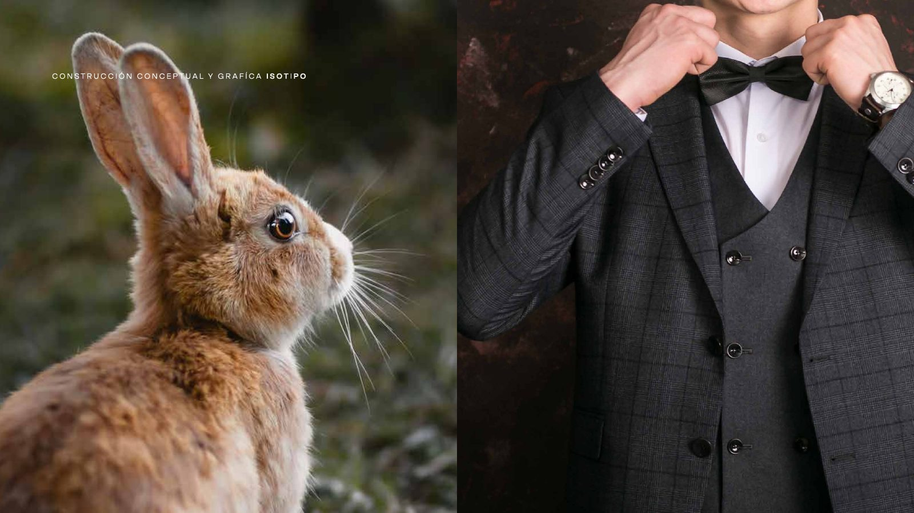
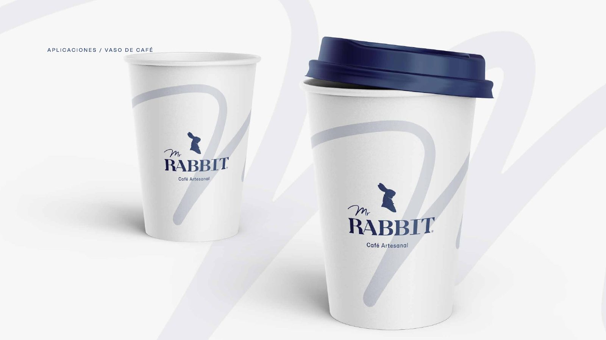
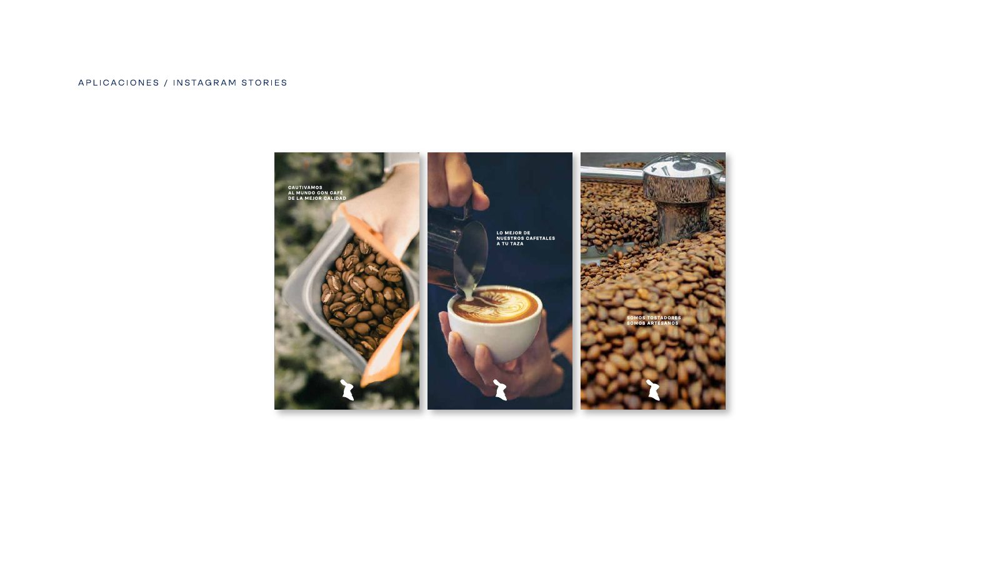
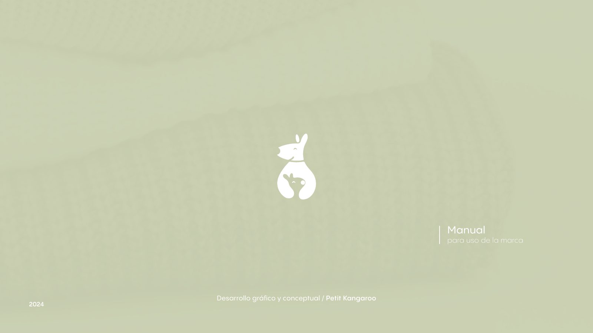
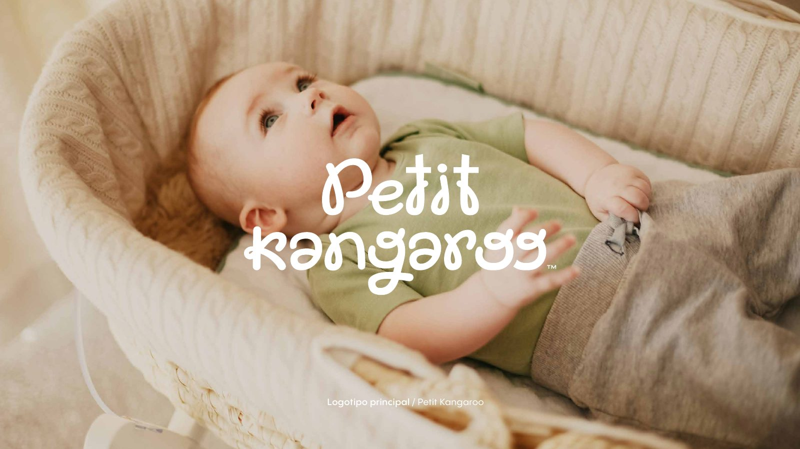
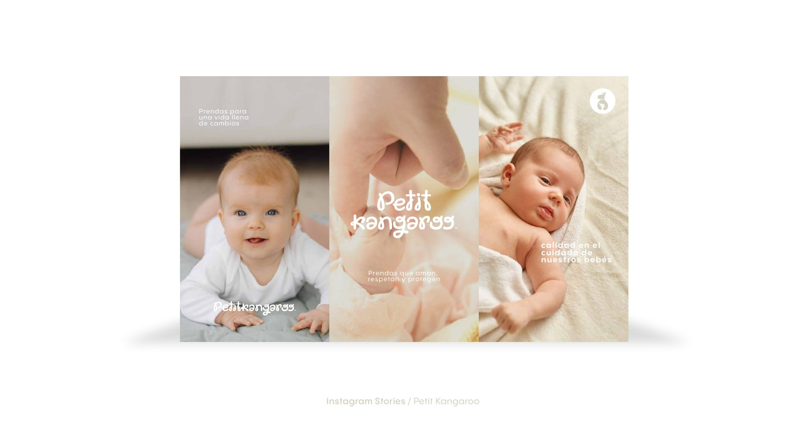

Hoja de ruta
Documento editorial que se lee en pantalla y se imprime bien.
- Retícula y jerarquía para datos y metas
- Infografías de los ciclos del sistema
- PDF interactivo con índice navegable

Diseño marcas, documentos, sitios y videos para que la información compleja se entienda a la primera.
Profesional de diseño gráfico y comunicación digital para la divulgación de resultados de CTeI ambiental. Centro de Investigación en Economía Circular (Ɛ-BiO), Grupo de Investigación en Biotecnología y Ambiente y UNAB Ambiental.
Profesional en Diseño Gráfico, Universidad de Investigación y Desarrollo (UDI), Bucaramanga, 2019.
Cumple el perfil de formaciónEn diseño gráfico, diagramación, contenidos digitales y producción audiovisual, desde 2018 hasta hoy.
Supera la experiencia solicitadaLas ocho funciones de la convocatoria, una por una, con el trabajo que lo demuestra.
Diseñador gráfico y director audiovisual. Mi trabajo empieza antes del diseño: entender qué hay que comunicar, a quién, y cuál es la forma más clara de decirlo. De ahí salen marcas, documentos, sitios y videos que funcionan como un mismo sistema.
Proyectos empresariales de marca y contenido. Para Grupo Manzanares, reposicionamiento digital de Carnes Manzanares con sistema de contenido y video institucional. Para Café Forestal, producción audiovisual y campañas como Alborada y el lanzamiento de su tienda web. Creación de marcas y manuales de identidad.
Diseño de piezas gráficas y producción de contenido audiovisual para redes sociales y comunicación de marca.
Piezas para redes sociales y diseño de fachada exterior.
Un resultado que nadie entiende no se apropia.
El proyecto usa dinámica de sistemas basada en la comunidad. Mi propuesta trabaja con la misma lógica: un ciclo de retroalimentación donde lo que se divulga vuelve a la comunidad y alimenta la siguiente conversación.
Documento editorial que se lee en pantalla y se imprime bien.
Sitio para encontrar cada producto del proyecto en pocos clics.
Kit de comunicación con el mismo lenguaje visual.
Pieza de 3 a 5 minutos sobre el proyecto, su método y sus resultados.
Documental, registro de eventos y piezas publicitarias. Desliza para ver cada proyecto; el que está al centro se reproduce solo, sin sonido. Usa los controles del video para activar el audio o verlo en pantalla completa.
Documental de campaña al Concejo de Zapatoca. Entrevista, territorio y cultivo de café. 2:10 min.
Registro del congreso internacional: ponencias técnicas, encuentros y agenda cultural.
Cobertura de una cata de café guiada.
Spot para el lanzamiento de forestal.cafe, adaptado a TV y redes.
El barista presenta el café de temporada a cámara.
Versión 16:9 para pantallas en tienda.
Lanzamiento del café de temporada de Café Forestal. Una ficha técnica de origen, variedad, proceso y altitud convertida en una campaña completa: carrusel, reel, adaptación TV y piezas para tienda y web.


Manuales de marca completos: concepto, retícula de construcción, color, tipografía, usos incorrectos y aplicaciones. El mismo rigor que pide una hoja de ruta técnica.
Café artesanal de Bucaramanga. Símbolo que une grano, ave y hoja; paleta verde esmeralda y dorado. Manual de 14 páginas.






Café artesanal con carácter clásico: azul profundo, conejo elegante y caligrafía. Manual de 25 páginas.






Tienda de productos para bebé. Símbolo de madre y cría, tipografía amable y paleta suave. Manual de 42 páginas.





Marcas en las que hoy trabajo identidad, contenido o redes sociales.
Hablemos
Disponible para iniciar en las fechas del proyecto. Respondo el mismo día.